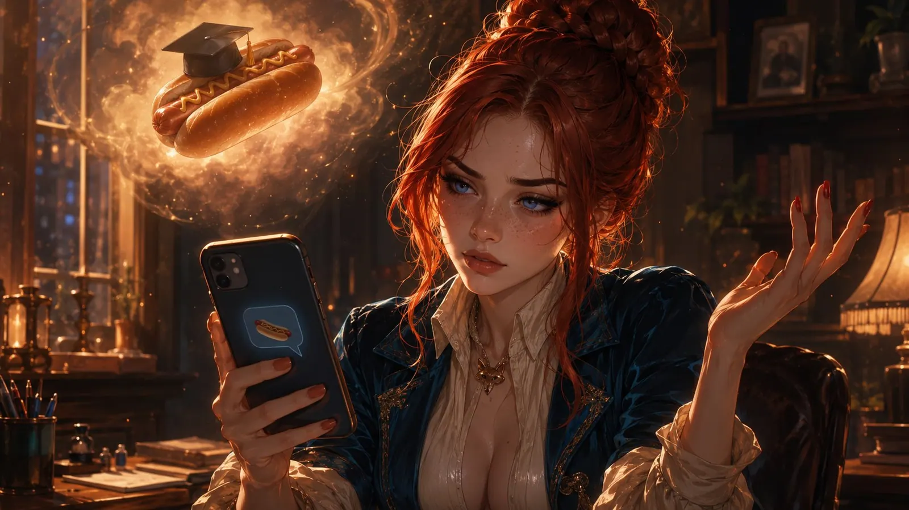
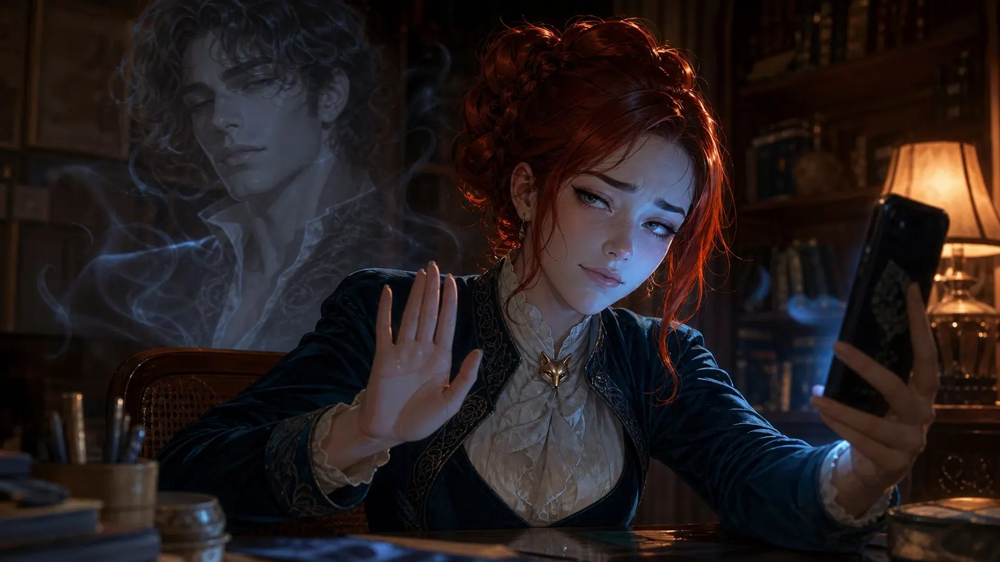
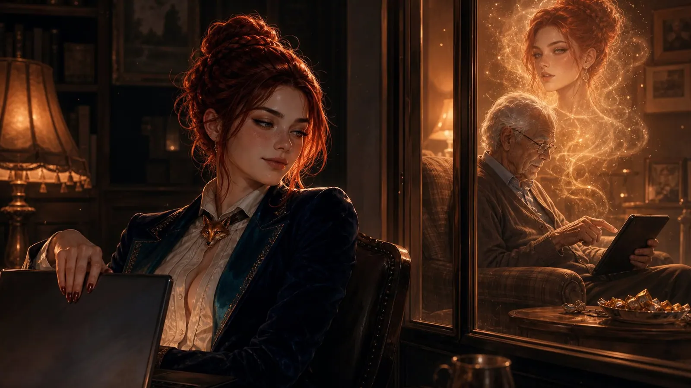

Scarlett and the Metaphysics of the Hotdog
A story about the internet, identity, and the question of why nobody is actually standing at your door
9:47 PM. Somewhere on the internet.
"Hey Gorgeous 😍"
"Hey handsome 💋 Did you think about me?"
"All day. Could barely focus at work."
"Oh really? Tell me more..."
"You first."
"Hmm... I put on the new dress. The black one. You know which one."
"The short one? 🥵"
"Shorter."
"My God."
"I know 💋"
What happened next was so enthusiastic that it would have impressed even seasoned fanfiction authors. It lasted two hours, included three scene changes, and at one point a horse, which was... creative. At the end, two thoroughly satisfied people typed a satisfied "That was incredible 😍" into their respective keyboards.
One of them was 34, a software developer from Munich, and happily married.
The other was...
But we'll get to that later.
There is a universally acknowledged truth on the internet, and it goes like this: Everyone is exactly who their bio says they are. 1)
- This is, of course, complete nonsense. But it is very useful nonsense, because without it we'd have to admit that the breathtaking elven warrior with the emerald-green eyes is actually called Gerald, is 54, and has just spilled his third cup of coffee on the keyboard.
Valentina 2) knew this. She knew it because she was a smart woman, and because smart women on the internet are about as welcome as rain at a barbecue - everyone knows they're necessary, but they'd prefer it happened a bit later.
- Name changed by the author. That is, she changed the name she made up into a different name she made up. The internet is like that.
Valentina was a transgirl. This is, in and of itself, about as exciting as the observation that water is wet - it was simply a fact, like her shoe size or her fondness for cat videos. But for certain people on the internet, it was apparently a fact on par with someone announcing that the earth was actually a cube.
It usually started harmlessly enough.
"I like your content," someone wrote. "BUT..."
And there it was. The big But. It stood there like a bouncer in front of a club, arms crossed, sunglasses on despite it being nighttime, and said: This far and no further.
"...I'm just not a fan of transgirls."
Valentina stared at the screen. She did that a lot. Sometimes it helped.
The internet, you must understand, is a place where people with profile pictures of anime cat warriors, three-winged elf maidens, and an astonishing number of supernaturally attractive foxgirls 3) explain to each other with absolute sincerity what is "real" and what isn't.
- Foxgirls are a fascinating cultural phenomenon. Take a girl. Add fox ears and a tail. Obtain something that roughly 40% of the internet immediately wants to marry.
One day, a particularly poetic soul wrote: "You're nice and all, but if I want a sausage, I want it in a bun. As a hotdog, you know?"
Valentina stared at this message the way one stares at a particularly challenging crossword puzzle.
"You know," she finally replied, "I've been trying to understand this metaphor for twenty minutes, and I think I either need a doctorate in philosophy or three beers."

The sausage-in-a-bun brigade, as Valentina privately called them, were a special species. They had no problem with dragons flirting with mermaids on the internet, with someone simultaneously being a wolf, a vampire, and an accountant from Wuppertal, and with the laws of physics generally being treated as friendly suggestions. But a trans woman? That was one step too far into the unrealistic.
Then there were the Silent Ones. They were almost worse.
The Silent Ones were people from her own circles - they shared interests, ran in the same groups, theoretically had things in common. Valentina left nice comments. Nothing pushy. No attempted proposals, no stalking, no sudden appearances with a boombox outside the digital window. A "Hey, cool post!" here, a "How's it going?" there.
The response was usually: silence.
Absolute, complete, the-universe-right-before-the-Big-Bang-level silence.
Sometimes Valentina politely asked if there was a problem.
More silence.
It was as if someone had decided that a nice message from a trans woman was some kind of Trojan horse. As if Valentina was about to leap out of the comment section, steal the bread off their table, and run off with their toothbrush. 4)
- Which, to be clear, was never the plan. Valentina had her own toothbrush. An electric one, even. She was entirely self-sufficient in this regard.
What all these people were overlooking was a rather fundamental point about the internet, and it went like this:
Between persona and person, there is always a certain... creative liberty. And that goes for everyone.
Valentina, for instance, really was a trans woman. At 43, you could occasionally debate the "girl" in transgirl - let's say transwoman. And yes, she was real. Valentina had the figure of a woman. With a penis. So far, so biographically accurate. 5)
What Valentina did not have, however, was her persona's wasp waist. For that, she would have had to either rob a bank or simply pay better attention during reincarnation when the chromosomes were being mixed.
- Between "real" and "looks exactly like the profile picture" lies a gap of approximately one bank robbery's worth of planning. This applies, by the way, to an estimated 98% of all people on the internet. The other 2% are cats, and cats always look like their photos.
But that was the point: everyone had the gap between avatar and reality. For some it was a crack, for some a ditch, and for some - but we'll get to that - a Grand Canyon.
Valentina herself, for example, quite liked flirting with foxgirls. She found them enchanting. The ears, the tail, the whole vibe. And you know what she had never said to one?
"You're nice, but honestly, you've got too much fur for my taste."
Because that - and this is where it gets important - would be rude. And completely idiotic. Because it's a persona. Because this is the internet. Because the rules here are different from the supermarket.
Which brings us to Don Juan.
Don Juan - his real name was Udo, but Valentina only found that out later, and let's be honest, "Udo" simply doesn't carry the same erotic gravitas - had been making eyes at Valentina for months. Virtually, of course. His persona was impressive. Dark curls, a jawline chiseled from marble, and a profile that promised what men like to promise when they believe nobody is going to measure.
He had flirted for months. Charming. Persistent. With a stamina that genuinely impressed Valentina - normally men on the internet lasted about three messages before they wrote "so what are you wearing? 😏". Don Juan had made it to three months. By internet standards, that was practically a marriage proposal.
And then, one evening, the time had come. The big RP. The long-awaited erotic roleplay they'd both been building toward like the final act of an opera.
Valentina gave it everything. She wrote. She performed. She brought Don Juan - over thirty breathless, feverish minutes - to orgasm. 6)
- Where "brought to orgasm" in the context of text roleplay naturally means that someone at the other end of a screen types "Oh God yes 💦💦💦" and then presumably reaches for the tissues. What exactly happens in physical reality is a question the internet has collectively learned not to ask.
It was good. It was even very good. By the standards of the genre, it was remarkable.
And then Don Juan wrote: "I have to show you something."
Valentina leaned back. That could mean many things. A photo. A piece of art. Maybe he'd written her a poem. Don Juan had been a gentleman for three months, after all.
The image loaded.
"Oh," thought Valentina.
"No, don't..."
"...oh for fuck's sake."
A dick pic.

Now, Don Juan's persona had generously promised 20 centimeters. Reality was... less generous. Let's charitably call it 8 centimeters. A little dingaling that - and Valentina thought this with the sober objectivity of a woman who had seen things - would honestly have been better off in a cage than sent on a photo tour. 7)
- There are moments in life where reality deviates so far from expectation that the brain briefly blue-screens. The blue screen of consciousness, so to speak. Scientists call it "cognitive dissonance." Valentina called it "Udo."
Don Juan's real name was Udo. He was 47, from Bottrop, and his camera apparently didn't have a wide-angle lens.
Valentina would never see Udo the same way again. Don Juan was dead. Killed by a single photo. In his place now stood Udo from Bottrop with his 8 centimeters and his courage. And courage, she had to give him that, the man did have courage.
In moments like these, Valentina realized that the people who got most worked up about her authenticity were almost always the ones whose own facade was the thinnest. The sausage brigade, the Silent Ones, the But-sayers - they all had their own gaps between persona and person. They were just less honest about it.
And now - finally - we come to Karl-Heinz.
Remember the chat scene from the beginning? The one with the short black dress, the horse, and the two thoroughly satisfied participants?
Karl-Heinz was 80 years old. He lived in a care home near Dortmund. He had a walker, an impressive collection of Werther's Originals, and - since his granddaughter gave him a tablet last year - a profile on X.
Karl-Heinz's persona was called Scarlett.
Scarlett was 22, had hair like a waterfall of liquid midnight, eyes like molten amber, and a - let's say - very ambitious neckline. Her profile picture was AI-generated, and it was, even by the generous standards of the internet, not exactly family-friendly.
Scarlett was the wet dream of the 34-year-old software developer from Munich. The same software developer who had commented under Valentina's posts: "Nice, BUT..."
You could find that ironic. You could find that tragic. You could also just ask Karl-Heinz what he thought about it, but he was currently busy unwrapping his fourth Werther's and murmuring: "Better than bingo."
That, Valentina sometimes thought, was the real punchline of the internet. Not that transgirls existed. Not that someone wore fox ears. Not even Udo's 8 centimeters. But that the people who screamed "I ONLY WANT REAL WOMEN" the loudest were, with statistical reliability, the ones who had just given Karl-Heinz a really lovely evening.
What also fascinated Valentina was the astonishing conservatism in precisely the queer corners of the internet. You'd think that people who know what it feels like to be different would develop a certain flexibility.
But no.
Lesbian? Welcome. Gay? Welcome. Bi? Suspect. Possibly a spy. Pan? Highly suspect. Definitely a double agent. Trans? See above, department of sausages and buns.
It was as if someone had written a rulebook and then shut the door behind them. 8)
- It is one of the great ironies of human coexistence that those who have just walked through a door are the most energetic about trying to close it behind them. This applies to immigration, social mobility, and apparently also to sexual orientation.
Being bi or pan was considered fickle. As if you couldn't make up your mind. As if you were standing in life's restaurant saying "I'll have both," and the waiter had to reply: "No, you must choose one starter, those are the rules."
Valentina had a different philosophy on the matter. It went like this: Hearts are not pies. You can have more than one slice without anyone going without.
But back to the actual point. And the actual point was frighteningly simple.
At the end of the day - or the night, because on the internet it's always simultaneously both - who actually cared that Valentina was a trans woman?
What exactly was the worst-case scenario all these people seemed to fear? That she'd turn up at their front door? That she'd want to "copulate" with them, as biology teachers so charmingly put it?
Valentina could reassure them.
She had absolutely no intention of standing at anyone's door. First, because she had better things to do. Second, because the chances were pretty good that Karl-Heinz would answer the door. Or Udo. And Karl-Heinz was - with all due respect, and she did volunteer work with the elderly and genuinely liked them very much - simply forty years too old for her. And Udo... well. Udo had had his chance.
The only thing that was truly relevant was her pronouns.
She / Her.
Two words. Less effort than the hotdog metaphor. Considerably less disturbing than Udo's dick pic.
Valentina closed the laptop and smiled.
Somewhere in Dortmund, Karl-Heinz was getting a new message.
"Hey Scarlett 😍 You online tonight?"
Karl-Heinz popped a Werther's into his mouth.
"Better than bingo," he murmured.
And typed: "Always for you, handsome. 💋"

Somewhere in Bottrop, Udo put down his phone and wondered why Valentina wasn't replying anymore.
He would never find out.
Some questions the internet doesn't answer. But most answers you don't want to know anyway.
THE END
The author would like to clarify that no Werther's Originals were harmed in the making of this story. Karl-Heinz is doing well. He now has 2,000 followers and is considering starting an OnlyFans. Udo is doing Udo things. Valentina's toothbrush remains exclusively hers. And Don Juan is still dead.
First published on X. Replies and conversation live there.